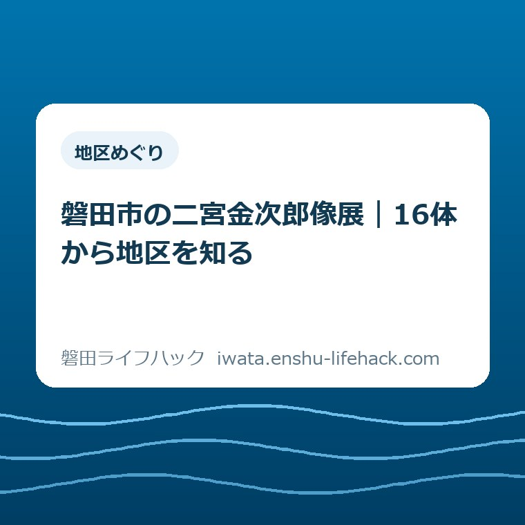
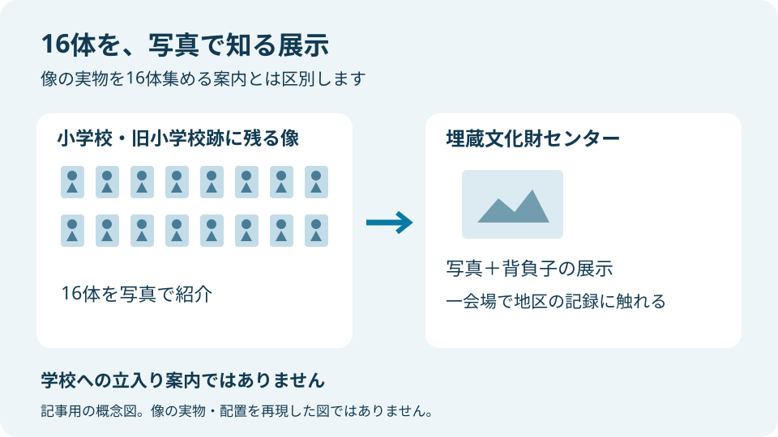
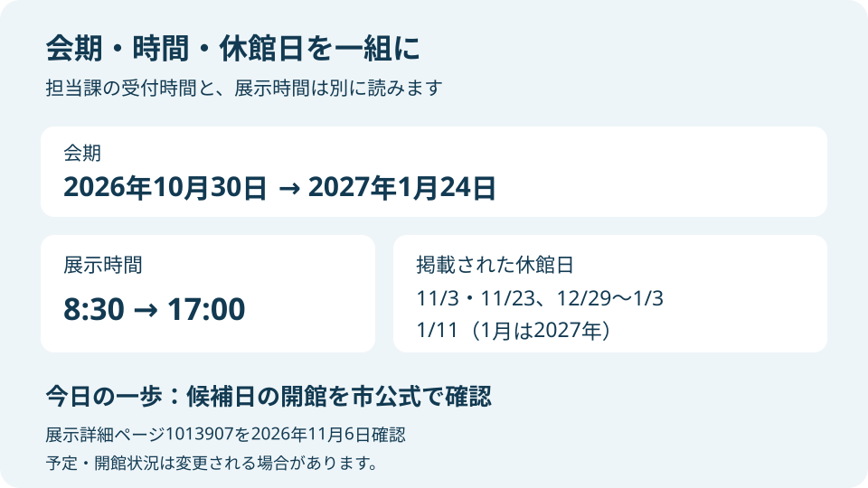

地区めぐり
磐田市の二宮金次郎像展｜16体から地区を知る

この記事の要点
Q. 磐田市の二宮金次郎像展では何が見られる？
A. 磐田市の埋蔵文化財センターで、2026年10月30日～2027年1月24日に開催。市内の小学校と旧小学校跡に残る16体を写真で紹介し、背負子も展示します。無料・申込不要、8時30分～17時。休館日があるため、出発前に市公式で候補日の開館を確認してください。
家族の予定を合わせる手間から考える
展示に出かけるまでには、家族の休みを合わせ、移動方法を決める手間があります。入館料が無料でも、その準備まで無料になるわけではありません。磐田市内の身近な歴史に触れたい方に、まず行き先を一つに絞れる案内を届けたいと思います。
本記事で紹介するのは、トピック展示「市内の『二宮金次郎像』を追って」です。磐田市の埋蔵文化財センターで、市内に残る像を写真で見られます。金次郎の生涯全体や全国の像を調べる記事ではなく、磐田の展示に行きたい方のための記事です。
展示の参加条件と、学校の敷地に入れるかどうかは別の話です。家族ごとに必要な移動や介助の条件も変わります。市の展示案内に学校の見学許可まで含まれているとは読まず、写真展の会場を目的地にしてください。
大石浩之（磐田市／不動産業）として、私は行き先の数より、出かける人が無理なく動ける段取りを優先します。今日は来館を決め切らなくても構いません。公式ページで候補日の開館を確かめる。それを今日の一歩にします。
16体を写真で紹介する展示です
磐田市の展示詳細によると、紹介するのは現在の小学校と旧小学校跡に残る16体の二宮金次郎像です。展示方法は写真であり、16体の像そのものを会場に移して並べるという案内ではありません。
写真の展示なら、学校ごとの場所を一日で回る予定を立てずに、同じ会場で見比べられます。私は、地区を知る最初の入口として、この形式に意味があると考えます。現地巡回をしなくても、地域の記録に触れる機会を持てるからです。
市公式の説明には、戦前の青銅製の像が戦時中の金属供出で失われ、戦後にコンクリート製などで建て直された例があると記されています。見慣れた像でも、一度建てた姿がそのまま残っているとは限らない点が、展示を読む手がかりです。
ただし、一般的な経緯を、展示される個々の像の来歴に当てはめることはできません。「この像も供出されたはず」と先回りせず、写真に添えられた解説で、分かる範囲を確かめる読み方を私は勧めます。

背負子を手がかりに、姿をゆっくり見る
磐田市の展示案内には、写真とともに「背負子」も展示するとあります。像が背負っている道具に目を向けられる構成です。写真の像と、実際に展示される道具は、同じものとして混同せずに見てください。
私は、金次郎像を努力の標語だけで説明し終えたくありません。地域に残ったものを知る場なら、まず何が写り、何が道具として示されているかを丁寧に見る。その順番の方が、家族それぞれの関心を置き去りにしないと考えます。
家族で見るなら、「知っている学校名があるか」「背中の道具はどんな形か」など、一人一つの問いを持つ方法があります。これは展示側の課題ではなく、私からの見方の提案です。答えを全部埋める必要はありません。
子どもに説明する役を、大人一人が背負う必要もないと思います。知らないものは「解説を一緒に読もう」で十分です。分からなかった言葉を一つ持ち帰るだけでも、次に地域のことを調べるきっかけになります。
会期と開館時間を一組で確かめる
二宮金次郎像展の会期は2026年10月30日から2027年1月24日までです。展示詳細に記された時間は8時30分から17時。会場は埋蔵文化財センターで、申込みは不要、費用は無料と案内されています。いずれも2026年11月6日に確認した情報です。
展示詳細に掲載された休館日は、11月3日・23日、12月29日から1月3日、1月11日です。施設ガイドでも、休館日は国民の祝日と年末年始とされています。年をまたぐ展示なので、2027年1月の予定を2026年の暦で見ないようにします。
私は、会期の最終日だけを家族に送るより、行けそうな日を一日決めて開館を照合する方が動きやすいと考えます。長い会期があっても、それぞれの勤務や通院、学校行事と合う日は限られるためです。
市の案内には展示時間と、担当課の受付時間が別々に載っています。問い合わせ先の欄にある時間を、そのまま展示の見学時間として予定表に写さないようにしてください。予定に使うのは、展示詳細の「開催時間」です。

見付の会場まで、交通案内を読み分ける
磐田市の施設ガイドによると、埋蔵文化財センターの所在地は磐田市見付3678-1です。展示の会場を地図で探すときは、学校名ではなく、この施設名と所在地を使えます。展示詳細からも施設ガイドへ進めます。
施設ガイドに掲載された駐車場は、磐田市立図書館東側の10台です。公共交通の案内は、JR磐田駅前バスターミナル2番のりばから遠鉄バス「二俣山東行き」に乗り、「図書館前」下車、徒歩1分となっています。
駐車台数は、その日に必ず空いている台数ではありません。私は、家族に車での来館を伝えるとき、駐車場所の案内と空きの保証を分けて説明します。到着時の混雑や臨時の利用状況は、今回確認できていません。
バスの案内も、所要時間や当日の発車時刻を保証するものではありません。施設ガイドで降りる停留所まで確かめたうえで、利用する便の時刻は運行事業者の案内で確認する必要があります。この記事では未確認の運賃や時刻を載せません。
車いすでの出入り口、対応トイレ、エレベーター、貸出用車いすは施設ガイドに表示されています。ただし、当日の貸出状況や個々の介助条件まで確認した情報ではありません。利用に必要な条件がある場合は、文化財課への確認を予定に含めてください。
地区の記憶と、学校への立入りは分ける
二宮金次郎像展は、小学校と旧小学校跡にある像を写真で知る機会です。市の展示詳細には、16か所を自由に訪問できるという案内はありません。この記事でも各校への立入りや撮影を勧める経路は設けません。
私は、地区の記憶に関心を持つことと、今そこで過ごす人の生活を守ることを両立させたいと考えます。学校名を知ったからといって、敷地に入り写真を撮ってよいとは決まりません。興味を持った先でも、公開条件の確認は別に必要です。
ご家族に学校の思い出があるなら、写真を見た後に「どんな場所にあったか」を聞く見方もあります。ただし、思い出と市の記録は別々に扱います。記憶が資料と違っても、その場でどちらかを誤りと決めつけない方が話しやすいと私は思います。
親子で行く場合も、昔を知る家族が一緒でなくても構いません。私は、思い出を持つ人だけの展示と狭める必要はないと考えます。初めて見る学校名や道具から、自分の住む地域への問いを一つ見つける読み方もできます。
良い点――一会場で地区を見比べられる
私が二宮金次郎像展の良い点と考えるのは、地域ごとに残る像を写真で見比べる入口があることです。移動先を増やす代わりに、同じ場所で複数の地区に目を向けられる。家族の予定調整を担う方にとって、行き先を一つにできる価値があります。
申込みの手続きが要らず、入館料も要らない点も、私は評価します。ただし、交通費や付き添いの時間まで不要になるわけではありません。「無料だから気軽」の一言で、送り迎えをする家族の負担を小さく扱わない案内にしたいと思います。
写真と背負子を同じ機会に見られる点にも、私は関心があります。像全体を一つの記号として見るだけでなく、背中の道具に視線を移せるからです。展示を見る人が、知識の量とは別の入口を選べる構成だと受け止めています。
市内の学校の歩みへ関心が広がった方には、既存記事の歴史文書館の小学校展の記録もあります。ただし、この小学校展は終了済みです。今回の展示と同時開催されている案内として予定に加えないでください。
注文したい点――写真展だと先に伝えたい
私から案内に注文したい点は、像を見る場所と写真を見る場所を、入口でさらに分かりやすくすることです。展示名だけを家族に送ると、像を探して学校へ向かう想像につながるかもしれません。私は「会場で写真を見る」と添えて紹介します。
これは市の案内に写真の説明がないという指摘ではありません。展示詳細には写真で紹介すると明記されています。その情報を、忙しい家族同士の短い連絡にも残したいという、私自身の案内の仕方への注文です。
もう一つ、私は終了時刻と担当課の受付時間を取り違えない見せ方を望みます。ページを開いた人が、仕事の合間に必要な欄だけ拾うこともあるからです。制度や施設の情報を生活の言葉に直すなら、何の時間なのかまで名前を付けたいと思います。
他の文化財行事と組み合わせたい方は、いわた文化財フェスティバル2026の記事を別に確認できます。写真展の入場条件を、解説や体験など別企画の参加条件へそのまま広げないようにします。
対案・結論――今日は開館の照合を一つだけ
二宮金次郎像展へ出かけるための今日の一歩は、市公式の展示詳細を開き、候補日が休館日に当たらないか照合することです。家族全員の予定や移動を一度に決めなくても、行ける日かどうかが分かれば、次の話をしやすくなります。
家族に送るメモを作るなら、私は「候補日／埋蔵文化財センター／写真展」と短く書きます。料金や時間を記憶だけで伝えず、根拠にした公式ページのリンクも付ける。その形なら、受け取った家族も同じ情報へ戻れます。
展示の前後に別の場所も回るかどうかは、開館を照合した後で決めれば足ります。旧見付学校の駐車場と見学順の記事は、別会場を検討する際の材料です。埋蔵文化財センターの駐車場や開館条件とは別に扱ってください。
候補日が合わなければ、その場で代わりの行き先を探し切る必要はありません。私は、出かけられない日を一つ消せたことも段取りの前進だと考えます。予定調整をする人に、調べ直しの仕事を際限なく増やさないことも案内の役目です。
大石の視点――残ったものから地区を見る
私は、不動産の仕事に関わる者として、土地や建物を住所だけで説明し終えない見方を大切にしたいと思っています。学校やそこに残るものは、地域を知る問いの入口になります。ただし、これは今回の展示を見学した感想ではなく、公開情報を読んだ私の意見です。
16体という数を、市内に存在する金次郎像の総数と断言はしません。市の説明は、現在の小学校と旧小学校跡にしぼった写真紹介です。調べた範囲を言葉に残す方が、記事を読んだ方が地区の記録を誤って伝えるのを防げます。
私には、親しみやすく短く紹介することと、像がたどった経緯を軽くしないことの間で迷いがあります。写真を見ただけで学校や地区の歴史を理解したとは言えません。だから、この記事では結論を広げず、展示に入るための材料を整えます。
見慣れたものを、意味を知っているつもりで通り過ぎない。その姿勢は、地域で暮らすうえでも役に立つと私は考えます。金次郎像を教訓として一括りにするより、資料に書かれていることと、自分が感じたことを分けて持ち帰りたいと思います。
よくある質問
磐田市の二宮金次郎像展は、予約や入館料が必要ですか？
市公式の展示詳細では、申込みは不要、費用は無料、対象はどなたでもと案内されています。会場は埋蔵文化財センターです。無料なのは展示の費用で、移動費などまで含む案内ではありません。参加に必要な個別条件や変更は、出発前に市公式ページで確認してください。
会場に16体の二宮金次郎像が並んでいるのですか？
市公式の説明は、市内の小学校と旧小学校跡に残る16体を写真で紹介する展示です。像そのものを16体集める案内ではありません。背負子も展示されます。各校の敷地への立入り可否は今回確認していないため、この記事を学校巡回や校内撮影の許可として扱わないでください。
2026年11月の祝日にも見られますか？
展示詳細には2026年11月3日と23日が休館日として掲載されています。会期中なら毎日開いている、という案内ではありません。年末年始と2027年1月の休館日もあるため、行く日を一日選んで市公式の開催期間・休館日と照合してください。変更の有無も同じページで確かめられます。
出発前は市公式の案内へ
二宮金次郎像展の会期や来館条件は変更される場合があります。この記事は磐田市の公式案内ではありません。ご家族の予定を決める前に、最後は磐田市公式の展示詳細と施設ガイドで、候補日の開館を確認してください。
参考にした公式情報
- トピック展示 市内の「二宮金次郎像」を追って／磐田市（2026年11月6日確認）
- 施設ガイド 埋蔵文化財センター／磐田市（2026年11月6日確認）
最終確認日：2026-11-06 ／ 本記事は公表情報と執筆者の見解を分けて記載しています。制度・数値・公開状況は変更される場合があるため、最新情報は磐田市公式ページでご確認ください。

大石浩之／磐田市／不動産業・宅地建物取引士